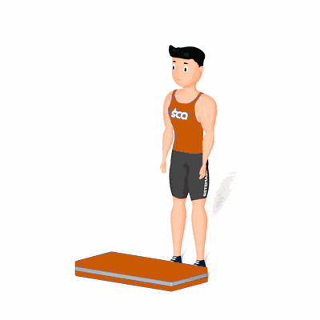

Polichinelo com Salto no Step

O exercício trabalha com intensidade o fortalecimento e resistência muscular das pernas e ombro, acelerando o metabolismo e auxiliando na queima de calorias.
Ficha Técnica
Tipo: Aeróbico
Grupo Muscular: Corpo
Aparelho: Nenhum
Músculos: Nenhum
Como realizar
- Na posição em pé e com um Step a frente;
- Pernas ligeiramente separadas, joelhos levemente flexionados e braços estendidos ao lado;
- Com um pequeno salto, abra as pernas e, ao mesmo tempo, erga rapidamente as mãos sobre a cabeça até quase se tocarem;
- Durante os movimentos, os braços devem estar levemente dobrados;
- Retorne rapidamente à posição inicial e realize um salto sobre o step e retorne a posição inicial;
- Repita os movimentos, conforme o número de repetições orientado pelo professor(a).
 RC STORE
RC STORE